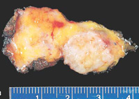
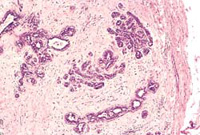

Commonest breast tumour in women <30 (Sabiston).
Account for 60% of breast lumps in young women.
- only rarely seen as a new lump beyond 40 (Sabiston).
Risk Factors
Women on cyclosporin A after renal transplant (50%).
Hyperplasia or benign neoplasm or both?
- no consistent cytogenetic changes have yet been found.
- some polyclonal, due to focal hyperplasia of lobular stroma
- others more clearly tumours of stromal cells.
--> the stromal element then is clonal, but the epithelial
element polyclonal.
Also accepted as a generic term
for
other benign mixed-gland-mesenchymal tissue tumours of breast
- includes hamartomas, other adenomas,
Pathology
Fibrous hamartomas.
- composed of stromal and epithelial elements.
Frequently multiple and bilateral.
- more often when due to drug-related stimulation.
Smooth, rubbery, may be lobulated.
- white cut surface with brown glandular areas possible.
Well encapsulated so easy to enucleate.
Hormonally-responsive epithelium.

Histology
Usually delicate cellular stroma, resembles intralobular stroma
- enclose glandular and cystic spaces lined by epithelium
Variable proportion of epithelial and stromal proliferation.
- stroma may be cellular or replaced by acellular swirls of
collagen.

Closely related to phyllodes
Histologic definition between fibroadenoma and benign phyllodes is
at-times tenuous.
- often large FAs with any suggestion of hypercellularity are termed
phyllodes.
- there is no harm from this.
<5 mitoses / high powered field, mild stromal pleomorphism, and
circumscribed margins.
Natural History
Usually appear in teenage girls / early reproductive years.
May enlarge cyclically, or with pregnancy or breastfeeding.
Usually cease growing at around 2-3cm (Bland)
Do not progress to cancer.
- but don't forget a cancer may arise amongst their epithelial
elements.
- >100 case reports of this since 1985 (Sabiston)
- most of these LCIS, 35% infiltrating Ca, 15% intraductal Ca.
Cancer in a newly diagnosed fibroadenoma is exceedingly rare.
Giant fibroadenoma
Sometimes appear during puberty (B&L)
>5cm in diameter and grow rapidly.
- same in all other respects.
Do these women have an increased
risk of cancer?
Risk not well defined.
- in one study only those 'complex' FAs with cysts >3mm,
sclerosing adenosis, epithelial calcifications or papillary apocrine
change conferred a mild increased risk.
Some have suggested a modest increase, at about 2x that of general
population (Sabiston).
- ie only slightly higher than reported excess risk for all women
who had undergone previous breast biopsy.
Have been found to have slight overall risk for later cancer (Bland)
only if:
-adjacent epithelium has
proliferative changes or those 'complex' changes identified above
Without these features, no added
risk.
Local
Firm, rubbery, round, smooth or bosselated, highly mobile lumps.
- may be lobulated
- but slip easily under the examining fingers.
May rarely be tender.
Often increases a little in size with menstrual cycle (hormonally
responsive).
- may mimic a cancer during pregnancy
- and regresses after menopause.
Gradually increase in size over several months.
Occasionally a lymph reaction may mimic carcinoma.
Assess as per usual breast lump.
- needle exam reveals no fluid.
- mammogram cannot differentiate these from cysts.
- but USS will show a cyst's cavity.
- may have some calcification
Operative
Obtain a core biopsyand
watch.
- if the lesion is typically a fibroadenoma
- and if the woman is satisfied
--> leave it in the breast
- this is most appropriate for up to 2-3cm lesions in pts
<25yrs (Bland)
- acceptable for those 25-35 but not beyond.
Evidence-basis
A prospective trial has evaluated the safety of conservation (Bland)
- all <40yrs and triple assessment completed; 90% agreed to
participate, 10% opted for OT
- if tumour volume increased 20%, it was excised (this occurred in
9%)
- pts were discharged at 2 years if the tumour remained static or
regressed.
- no cancers developed.
Excision
Considered if:
- older than 35
- increasing in size
- >2 or 3 cm
- tender
- or at patient's request.
Be as cosmetic as possible
- circumareolar incision preferred.
- modest tunneling as needed
- remove minimal adjacent breast tissue .